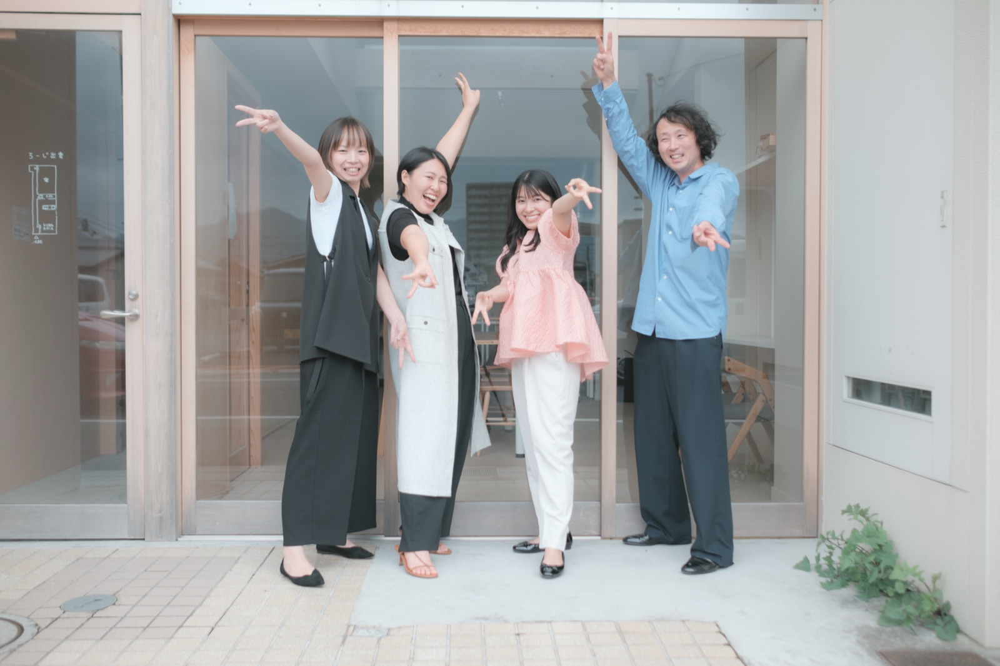
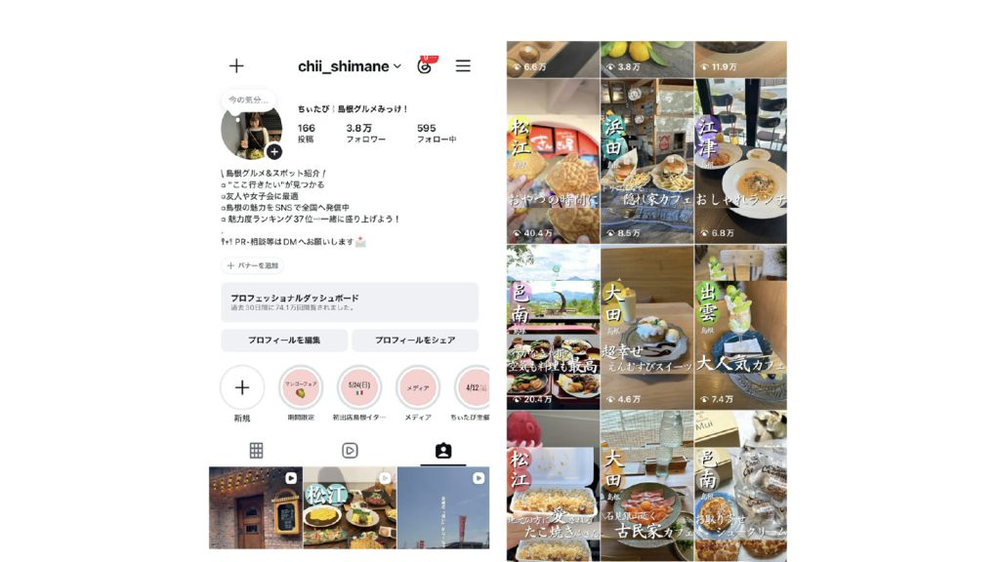
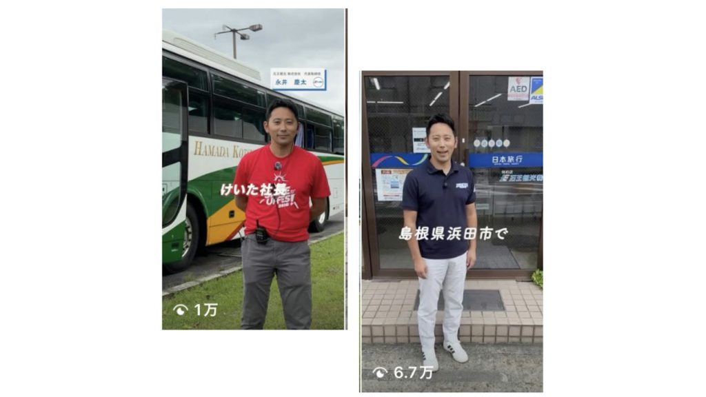
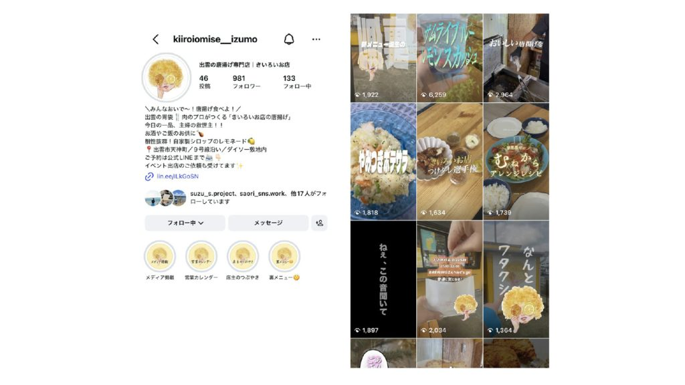
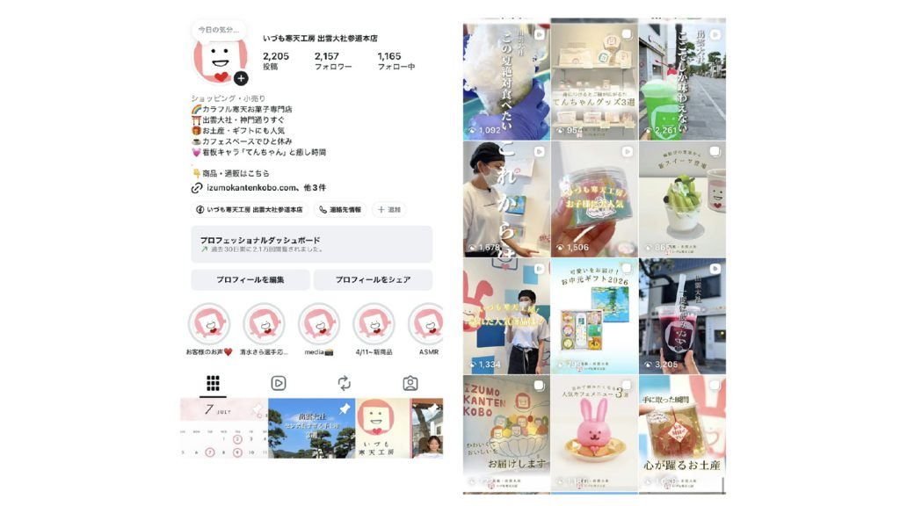
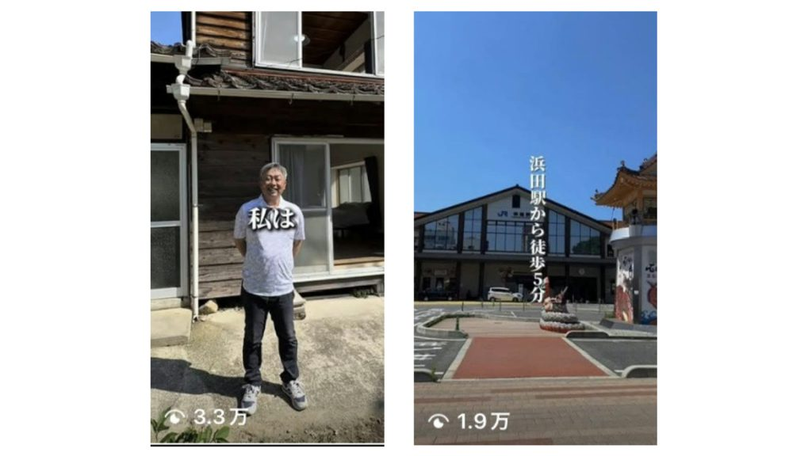
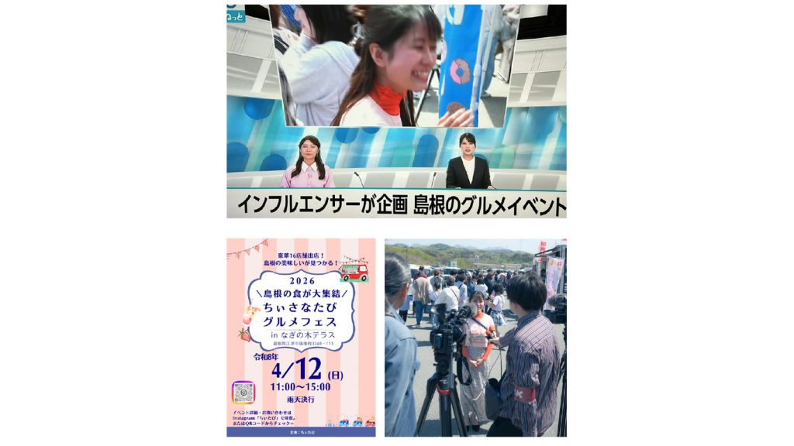
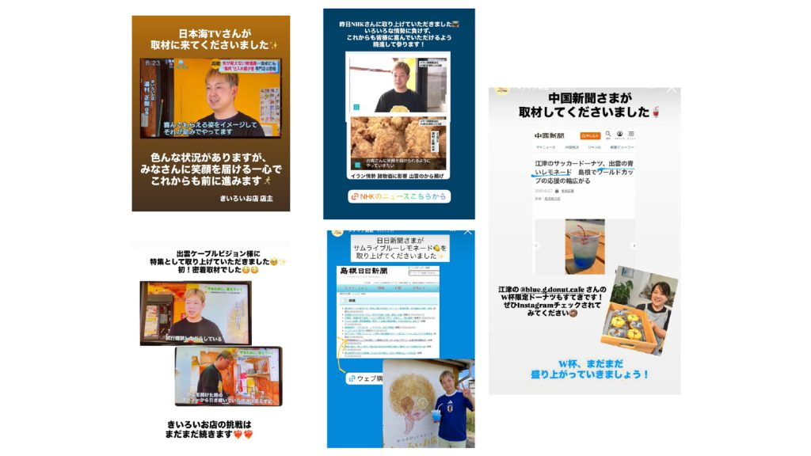
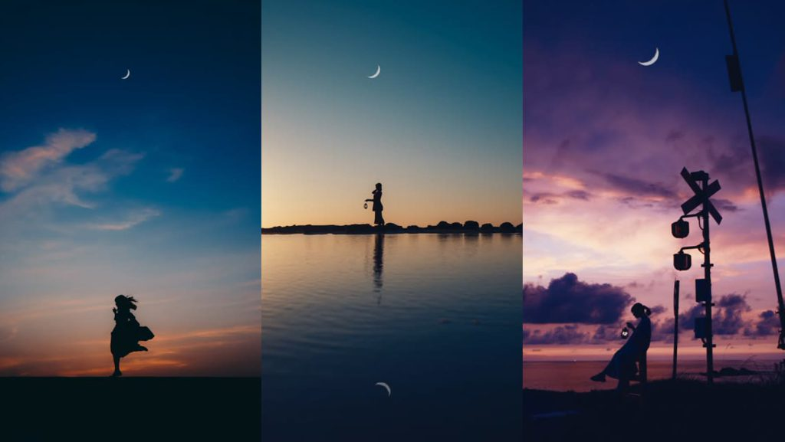

PHOTOGRAPHY
山陰の夕景を、作品に。
メンバーのフォトグラファー・佐々木健治による作品。
地方の風景の価値を引き出す、広告・SNS向けのビジュアルを制作しています。



S.projectは、山陰出身または山陰に関係する
メンバーで構成される、山陰のための
「地域共創プラットフォーム」です。
プロデューサー、SNSマーケター、動画クリエイター、
インフルエンサー、フォトグラファーなど、
様々な強みをもったメンバーが集まっています。
それぞれが個人で活動しており、
自立・自律したメンバーが集うチーム。
挑戦している人同士の化学反応により、
山陰の様々な課題解決や新たな価値の創出に走っています。
Instagramを中心に、アカウント設計から投稿企画・撮影・分析までを伴走。ターゲットと地域を明確にした発信で、フォロワー増加や売上向上につなげます。（実績：きいろいお店様 OPEN2ヶ月目で半年後の目標売上を達成、いづも寒天工房様 売上前年同月比 約1.5〜2倍 ほか）
アカウント設計、投稿企画、リール動画の台本・導線設計まで。世界観を統一したショート動画ブランディングを徹底的にサポートし、集客の柱を構築します。
「宣伝」「広告」だけではなく「広報」「メディア」の視点で伸びる地方戦略を。プレスリリースの作成代行や、時流に沿った話題づくりで新聞・TVなどの取材獲得を支援します。（実績：ちぃたびグルメフェスでNHKほか計5社の取材獲得・来場者5,000人）
ローカルコンテンツの企画・制作。地域を軸にした新たなブランド立ち上げにより地域の価値を高めます。
▪︎ Instagram基礎講座「SNS基本のキ」
Instagramの基礎・基本の知識を習得し、自分のアカウントのプロフィールを完成。投稿の方向性・軸を決めます。（オンライン開催5名から／対面開催10名から）
▪︎ 今更聞けないリール編集基礎講座
リール初心者のためのCapCutを使った編集講座。撮影〜編集まで講座の中で1本仕上げ、時短で編集するコツも学べます。（対面開催4名定員／オンライン開催なし）
企業・店舗のSNSアカウントを、企画から投稿・分析まで一貫して代行運用します。
すでに発信をしている個人・事業者の世界観づくりや投稿戦略を伴走型でサポートします。
「つい見たくなる」を軸にした、ショート動画（リール）の企画・撮影・編集を行います。
「宣伝」「広告」だけではなく「広報」「メディア」の視点で伸びる地方戦略を。Instagram運用・リール動画制作・プレスリリース作成・取材獲得までを一貫して支援しています。

S.project動画編集担当・隅井千晴本人が運用するInstagramアカウント。
＜運用2年＞
▪︎ フォロワー3.9万人（10月現在）
▪︎ iPhoneを活用した再現性の高い撮影スキル
▪︎ ターゲットが明確でシンプル
▪︎ 地域が特定されている
＜運用2ヶ月＞
▪︎ 1投稿でフォロワー700名以上増
▪︎ 社長自ら出演するトークリールで閲覧数上昇


＜運用10ヶ月＞
▪︎ OPEN2ヶ月目で、半年後の目標売り上げ達成
▪︎ お店のキャラクターを設定したイメージ戦略
▪︎ メディア戦略を並行して実践
取材獲得 → 新規来店者数増加
＜運用4ヶ月＞
▪︎ 保存率：運用3ヶ月目で9倍、運用4ヶ月目で15倍
▪︎ 売上：前年同月の約1.5〜2倍
▪︎ 既存フォロワーの閲覧が約87％


▪︎ 依頼時フォロワー4人 → 投稿後300人増
▪︎ 閲覧数3.3万再生、予約獲得へ直結
▪︎ 開業時にプレスリリースを作成代行
→ 新聞社2社、TV局1社から取材獲得
▪︎ NHK、石見ケーブル、山陰中央新報、中国新聞、朝日新聞（計5社）の取材獲得
▪︎ SNS発信・事前のメディア掲載にて、5,000人の来場者数を獲得（予想来場者数の1.5倍）


▪︎ 中東情勢、W杯など時流に沿った話題でコンスタントにメディアへ掲載
▪︎ 新聞・TVを観た新規顧客の獲得
visual artist / photographerとして島根と東京を拠点に活動。Instagramフォロワー6.1万人。夕景・月・シルエットを主題にした作品で、地方の風景の価値を引き出すビジュアルを制作しています。

ふるさと島根定住財団様主催の移住者交流会を企画・運営。移住者同士のつながりづくりと、地域の魅力発信を行いました。
2026年1月に立ち上げたばかりの企業様
こども向けのプログラミングスクールを運営
TRUSTED BY
メンバーのフォトグラファー・佐々木健治による作品。
地方の風景の価値を引き出す、広告・SNS向けのビジュアルを制作しています。
Inquiry
事業設計、SNS発信戦略、写真制作などに関する
ご質問やお仕事のご相談は、お気軽に下記フォームよりお問い合わせください。